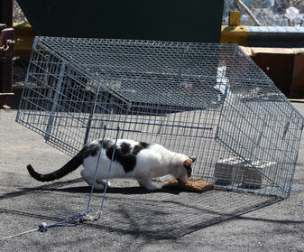
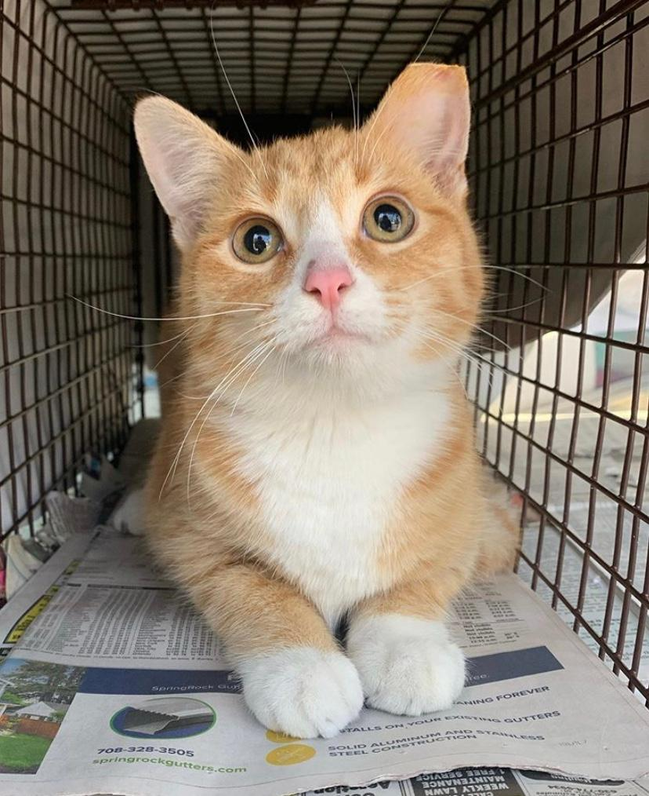
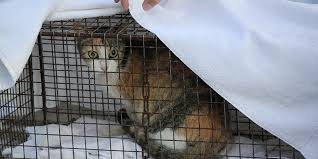

Helping Community Cats Live Better Lives

Step 1: Humane Trapping

Step 2: Spay/Neuter & Vaccination

Step 3: Safe Return
Trap-Neuter-Return (TNR) is a humane method of managing stray and feral cat populations. Cats are trapped, neutered or spayed, vaccinated, and then returned to their original location.
Sign up for our newsletter to learn more and support the TNR program.